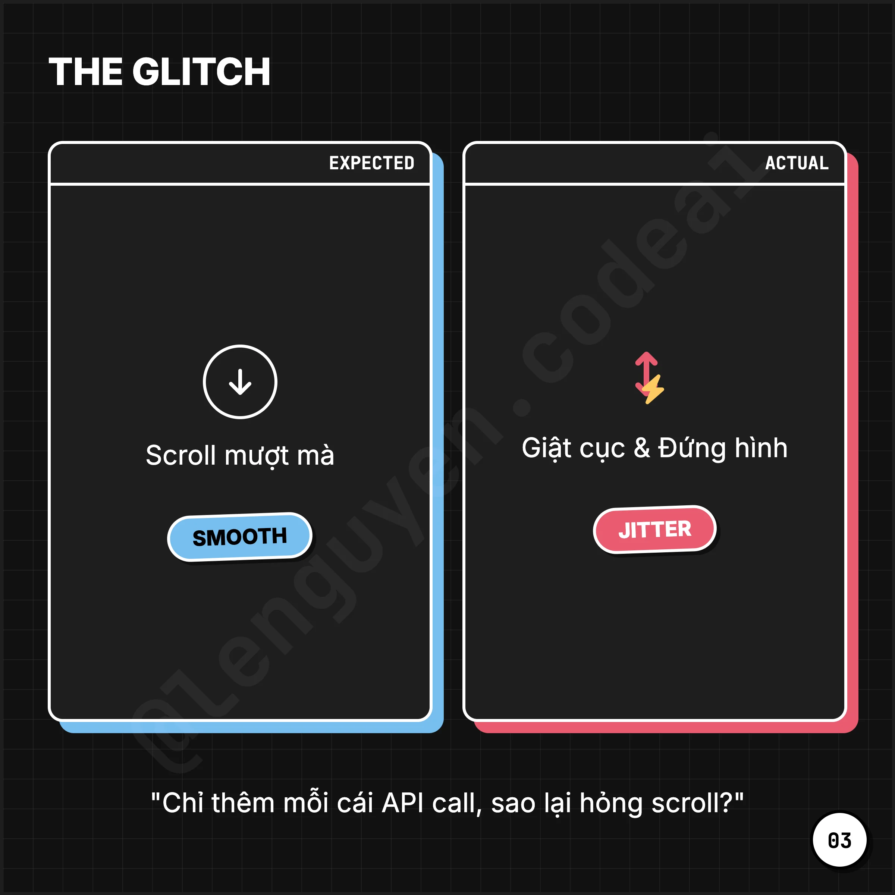
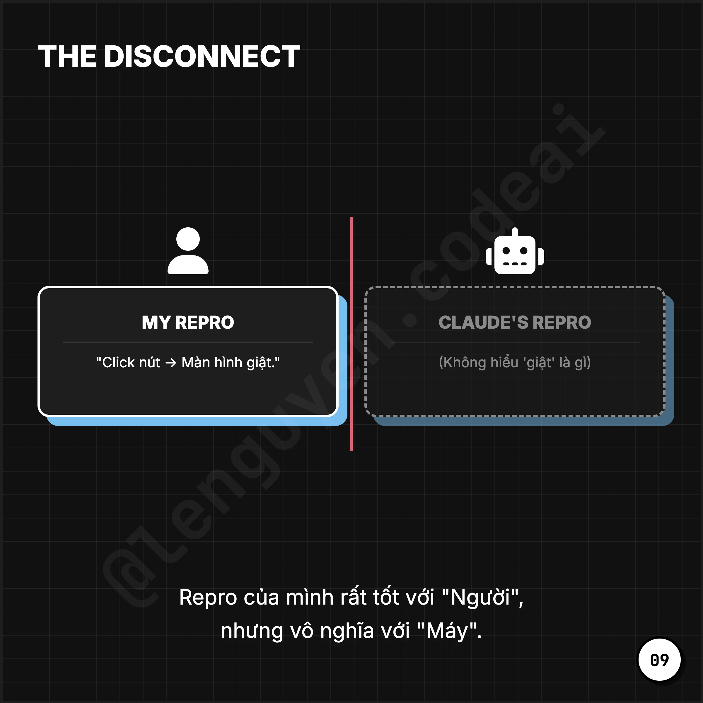
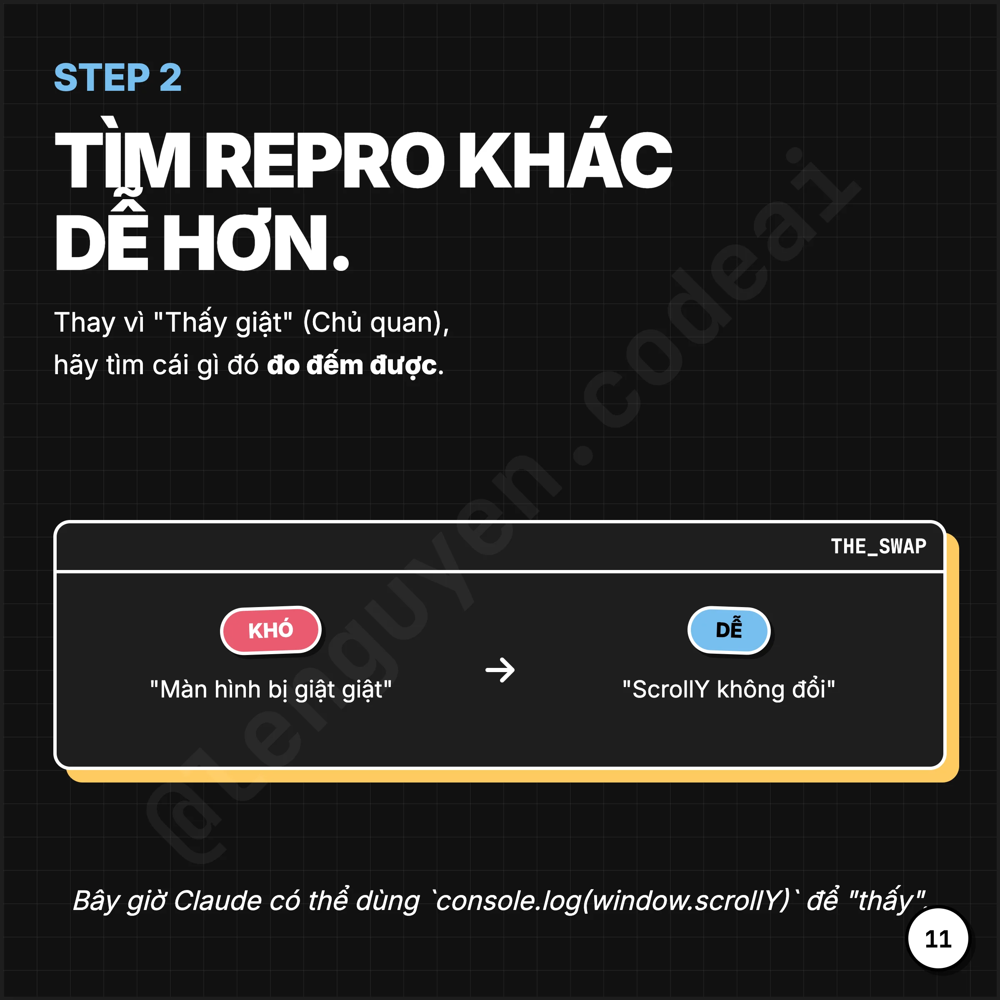
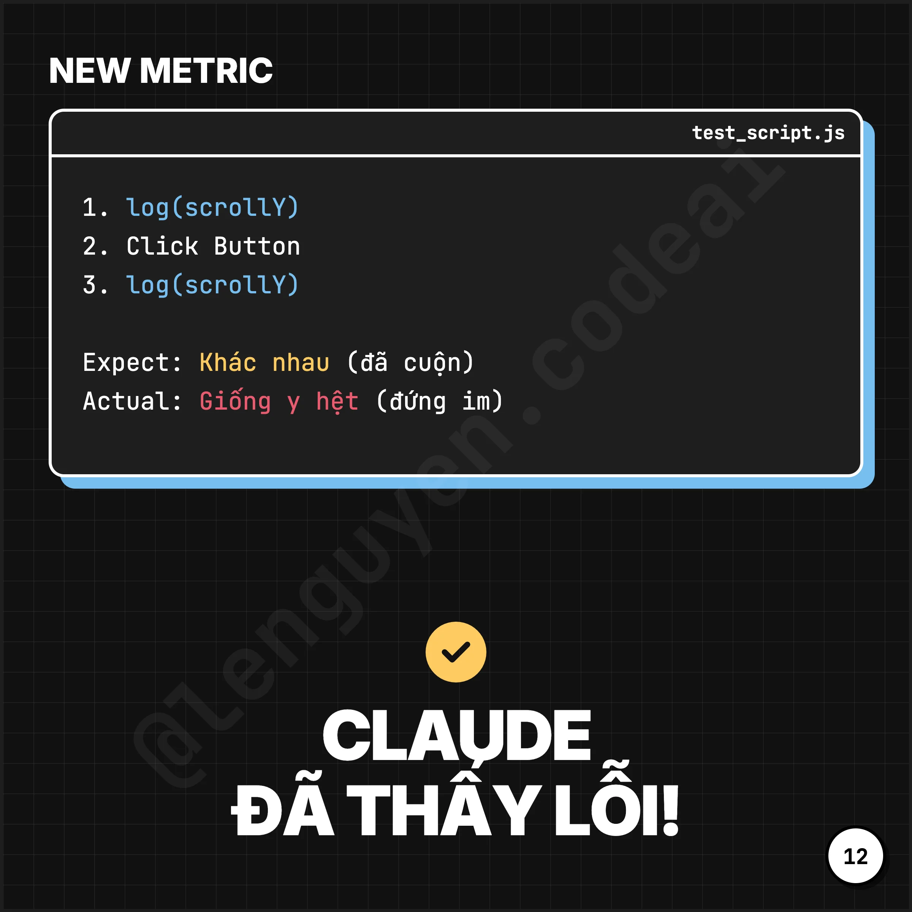
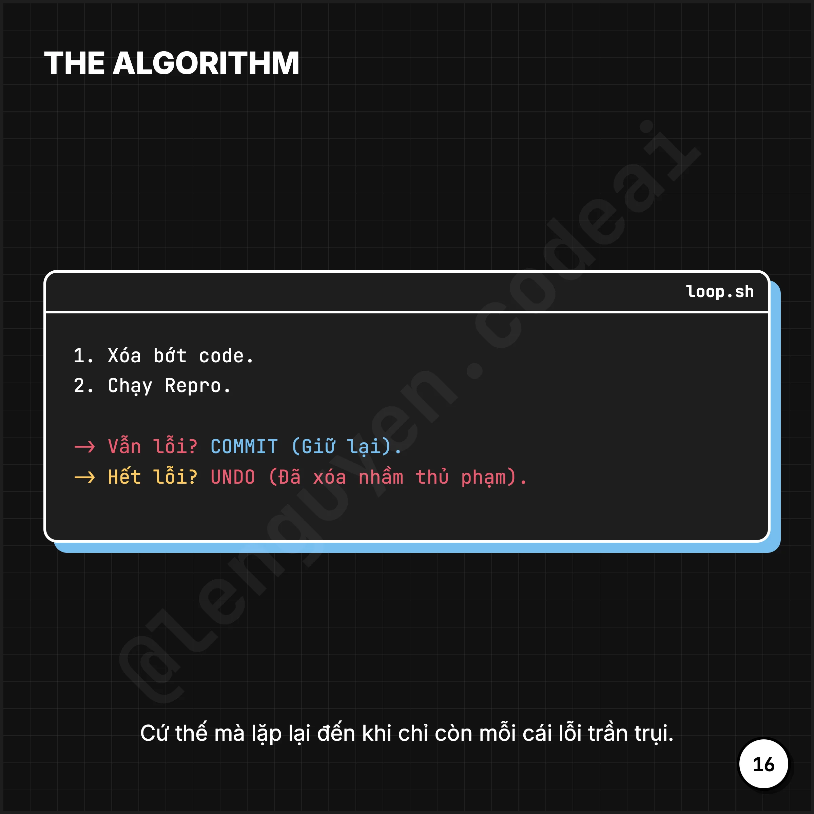
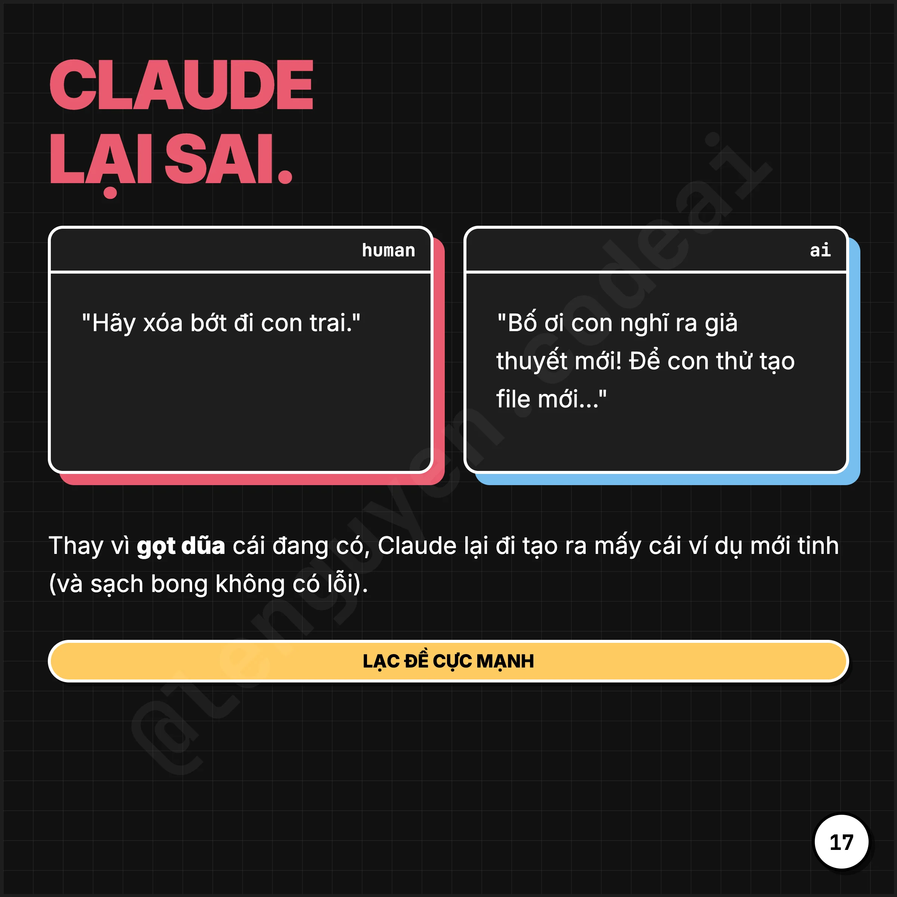
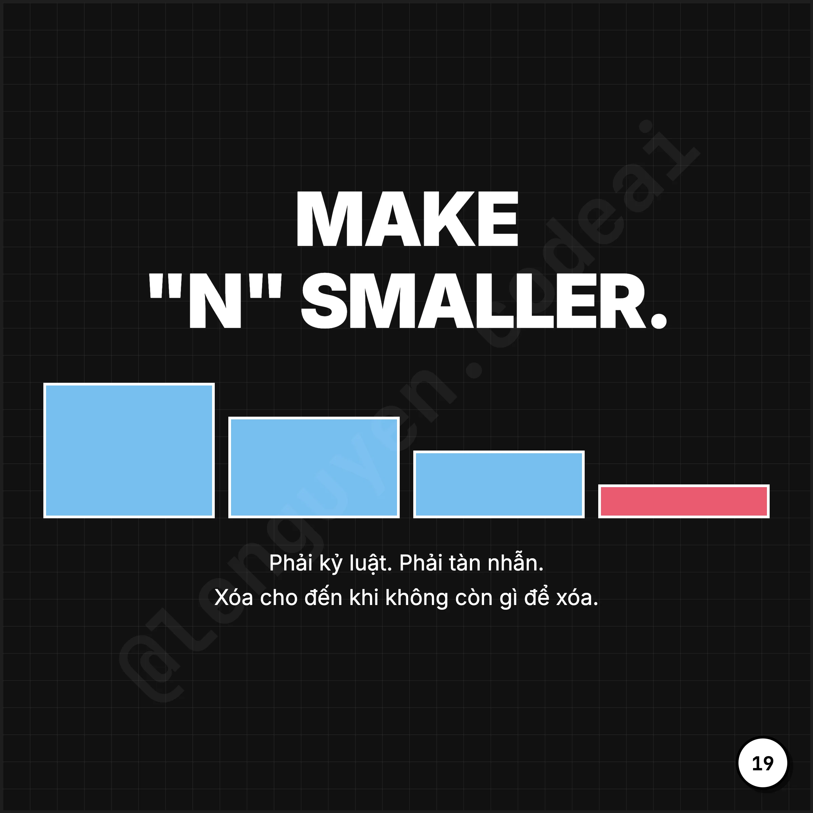
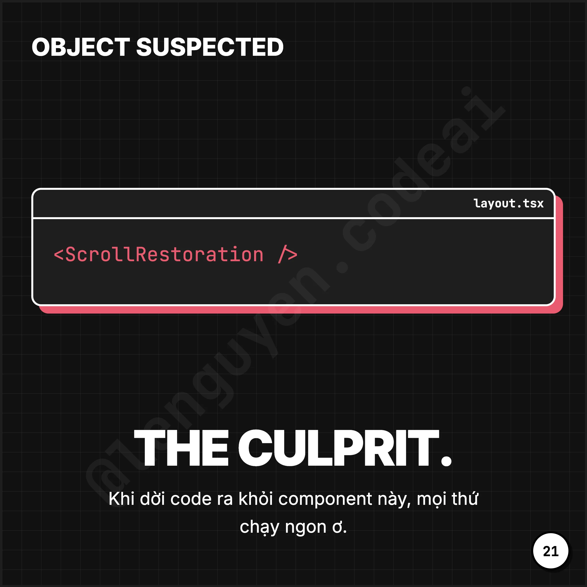
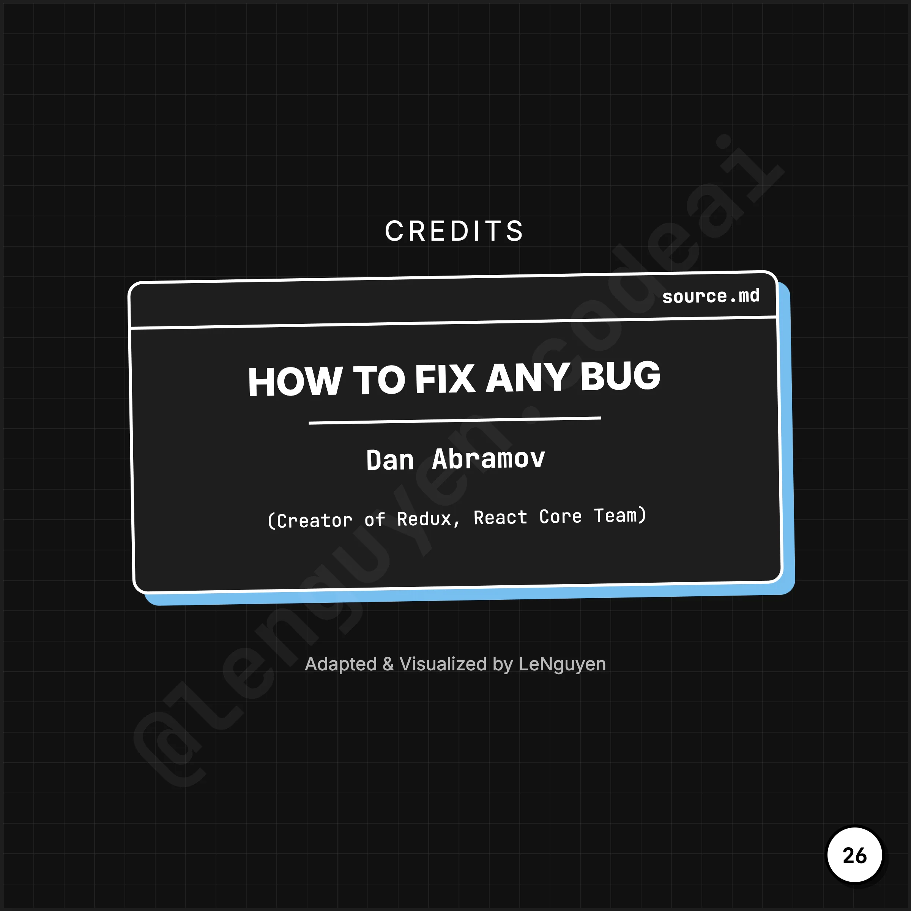
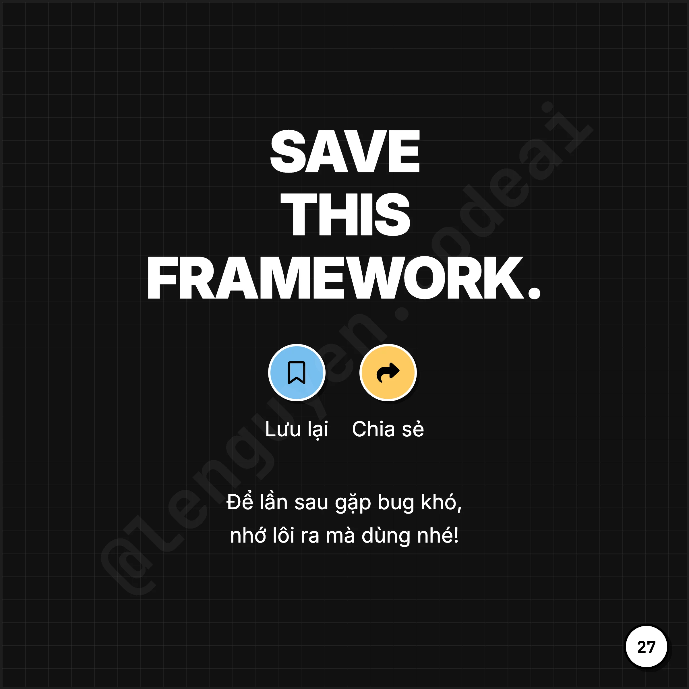

Kỹ thuật Vibe Debugging của Dan Abramov
Một số kinh nghiệm thú vị về VIBE Debugging từ Dan Abramov*
*Một số kinh nghiệm thú vị về **VIBE Debugging từ Dan Abramov
Câu chuyện
Mr. Dan nhờ Claude fix một cái bug cuộn chuột. Nó sửa 5 lần. Sai cả 5. Tại sao? Vì Claude không có “mắt” để thấy cái bug đó. Nó không có Repro*.
Chúng ta sống trong kỷ nguyên “Vibecoding” - code bằng cảm giác, fix bằng niềm tin. Nhưng Engineering thực sự không hoạt động như vậy. Một cái bug mà bạn không thể tái hiện (reproduce*) 100% thì về cơ bản là nó không tồn tại đối với máy tính.
Quy tắc vàng
“A repro is a sequence of instructions. It’s the test.” — Dan Abramov
Phương pháp Elimination
Thay vì đoán mò (Theories), hãy dùng phương pháp loại suy (Elimination):
- Xóa CSS. Bug còn không? Còn → Tiếp.
- Xóa **API **call. Bug còn không? Còn → Tiếp.
- Xóa React Router. Bug mất? → BẮT ĐƯỢC RỒI!
Cách tư duy “ngược”
Đừng cố thêm code để fix, hãy xóa code để tìm ra lỗi.
- Dan Abramov là một nhà phát triển phần mềm nổi tiếng và là đồng sáng tạo thư viện JavaScript Redux, ông được biết đến qua các đóng góp quan trọng cho hệ sinh thái React.
Chú thích:
- Reproduce là một động từ tiếng Anh có nghĩa là tái sản xuất, sao chép, mô phỏng hoặc sinh sản/nảy nở. Từ này được dùng trong nhiều ngữ cảnh, từ sinh học (sinh sản nòi giống) đến nghệ thuật (tái tạo tác phẩm), công nghệ (tái tạo lỗi) và nghiên cứu khoa học (lặp lại thí nghiệm).
Slides










